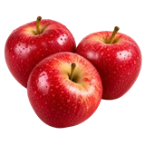

होम / सेब

सेब का भाव आज | Apple Mandi Price Today
सेब के आज के उपलब्ध मंडी भाव देखें—रामगंज मंडी, भिवानी और हिसार के मॉडल, न्यूनतम और अधिकतम रेट और प्रति किलो भाव।
नीचे मंडी-वार सूची में सेब के उपलब्ध भाव दिए हैं। मंडी के नाम पर क्लिक करके उस मंडी की दूसरी फसलों के भाव भी देख सकते हैं।
सेब का भाव आज: पेटी रेट, किलो रेट और भाव बदलने के कारण
राम राम किसान भाइयों!
देशभर की फल मंडियों में सेब (Apple) सबसे अधिक नकदी प्रवाह और ऊंचा मुनाफा देने वाली प्रमुख बागवानी फसलों में सबसे आगे माना जाता है। उत्तर भारत की ठंडी वादियों यानी हिमाचल प्रदेश और जम्मू-कश्मीर के बागानों से टूटने वाला सेब जब देश के अलग-अलग राज्यों की कृषि उपज मंडियों में पहुंचता है, तो इसका दैनिक कारोबार करोड़ों रुपये का आंकड़ा पार कर जाता है। कश्मीर की सोपोर, श्रीनगर व कुलगाम मंडियों से लेकर हिमाचल प्रदेश की सोलन मंडी, शिमला, ढली और एशिया की सबसे बड़ी थोक फल मंडी आज़ादपुर (दिल्ली) तक, सेब की दैनिक आवक और व्यापारिक हलचल पर देशभर के फल व्यापारियों की नजर टिकी रहती है। मंडी में उतरने वाली प्रत्येक खेप का थोक मूल्य और स्थानीय खुदरा बाजार में आम उपभोक्ता तक पहुंचने वाली अंतिम दरें सीधे तौर पर उत्पादक किसानों की जेब और मुनाफा तय करती हैं।
सेब का व्यापारिक ढांचा: थोक पेटी बनाम प्रति किलो का भाव
मंडी व्यापार की दुनिया में सेब की खरीद-फरोख्त दो मुख्य स्तरों पर काम करती है। थोक मंडियों में किसान और बड़े आढ़ती कभी भी किलो के तराजू पर सीधे मोलभाव नहीं करते, बल्कि वहां पूरा व्यापार प्रति पेटी (Carton/Box) के हिसाब से चलता है। मानक लकड़ी की पेटियों या आधुनिक टेलीस्कोपिक गत्ते के कार्टन में 20 से 24 किलोग्राम का वजन होता है, जबकि छोटी या हाफ पेटी में 10 से 12 किलोग्राम माल भरा जाता है।
इसके विपरीत, जब वही माल स्थानीय फल विक्रेताओं, ठेलों और खुदरा दुकानों तक पहुंचता है, तो ग्राहक सीधे 1 किलो सेब की कीमत के आधार पर फल खरीदता है। थोक पेटी के कुल भाव और खुदरा में प्रति किलो की दर के बीच का यह अंतर मंडी आढ़त, लोडिंग-अनलोडिंग, भाड़ा, तुलाई और खुदरा व्यापारी के मुनाफे पर निर्भर करता है। जब किसान अपने माल की सख्त ग्रेडिंग करके उसे सही कार्टन में पैक करके मंडी में पेश करते हैं, तो व्यापारियों के बीच पेटी पर अधिकतम बोली लगाने की होड़ मच जाती है, जिसका सीधा आर्थिक लाभ किसान को मिलता है।
सेब के दैनिक मंडी भाव तय करने वाले प्रमुख व्यापारिक मानक
मंडियों में सेब का भाव किसी एक नियम से तय नहीं होता, बल्कि इसके पीछे गुणवत्ता, आकार और बाजार की मांग से जुड़े कई ठोस मानक काम करते हैं:
- किस्म और बाजार में व्यावसायिक मांग: मंडी में सेब की किस्म सबसे पहला पैमाना होती है। पारंपरिक रॉयल डेलिशियस (Royal Delicious), रेड डेलिशियस और उन्नत विदेशी किस्में जैसे गाला (Gala), डार्क बैरन गाला और रेड वेलॉक्स की मंडियों में सबसे ज्यादा पूछ-परख रहती है। गहरे चटक लाल रंग, नैचुरल चमक और करारेपन से भरपूर किस्मों को हमेशा बाजार में सबसे ऊपरी प्रीमियम भाव मिलता है।
- साइज, ग्रेडिंग और काउंट (प्रति पेटी दाना): सेब की पेटी की असली कीमत उसके भीतर मौजूद दानों की एकसमान बनावट और काउंट (Count) पर टिकी होती है। सुपर लार्ज, लार्ज और मीडियम साइज के बेदाग फलों की पेटियां छोटे (स्मॉल या पिट्ठू) आकार के दानों की तुलना में दोगुने तक भाव पर बिकती हैं। यदि एक पेटी में सभी दाने बिल्कुल एक समान नाप के हों, तो व्यापारी बिना हिचकिचाहट के सबसे ऊंची बोली लगाते हैं।
- दाग-धब्बे, ओलावृष्टि और छिलके की चमक: पहाड़ी क्षेत्रों में बेमौसम ओलावृष्टि (Hailstorm) या तुड़ाई के दौरान हाथों के दबाव से फल पर लगे काले निशान भाव को तेजी से गिरा देते हैं। वहीं पेड़ से सीधे सुरक्षित तोड़े गए, बिना खरोंच वाले और प्राकृतिक वैक्स की चमक लिए हुए सेबों की मांग बड़े शहरों के मॉल और प्रीमियम फ्रूट स्टोर्स में सबसे ज्यादा रहती है।
- पैकेजिंग तकनीक और ट्रे-पैक की मजबूती: पुराने समय की लकड़ी की पेटियों की जगह अब यूनिवर्सल ग्रेडिंग कार्टन और ट्रे-पैक पैकेजिंग ने ले ली है। ट्रे में रखा फल लंबी दूरी के सफर में आपस में रगड़ नहीं खाता और न ही दबता है। दिल्ली, मुंबई, बेंगलुरु और कोलकाता जैसी दूरस्थ उपभोग मंडियों के खरीदार केवल मजबूत और सुरक्षित पैकेजिंग वाली पेटियों पर ही शीर्ष दाम लगाते हैं।
- मौसम चक्र और सस्ता सेब मिलने का समय: सेब की बंपर कटाई का मुख्य सीजन अगस्त से शुरू होकर नवंबर तक चलता है। इस अवधि के दौरान जब हिमाचल के निचले व ऊंचे इलाकों और कश्मीर घाटी से लाखों पेटियां एक साथ मंडियों में पहुंचती हैं, तब बाजार में भरपूर आवक होने के कारण थोक भाव सबसे प्रतिस्पर्धी और अपेक्षाकृत सस्ते स्तर पर रहते हैं। पीक सीजन समाप्त होते ही मंडियों में ताजा आवक कम हो जाती है और भाव दोबारा चढ़ने लगते हैं।
- सीए कोल्ड स्टोरेज (CA Store) और ऑफ-सीजन की तेजी: मुख्य सीजन खत्म होने के बाद दिसंबर से लेकर अगली गर्मियों तक देश का सेब व्यापार सीए (Controlled Atmosphere) कोल्ड स्टोर के भरोसे चलता है। जो किसान या व्यापारी अपनी उच्च गुणवत्ता वाली फसल को तुड़ाई के तुरंत बाद सस्ते में बेचने के बजाय आधुनिक कोल्ड स्टोर में सुरक्षित रख लेते हैं, वे ऑफ-सीजन में सीमित आपूर्ति का फायदा उठाकर दोगुने तक ऊंचे दामों पर अपना माल बेचते हैं।
बागवानों के लिए अधिकतम मुनाफा कमाने की व्यावहारिक रणनीति
मंडी में अपनी फसल का सबसे ऊंचा भाव पाना केवल बाजार की किस्मत पर नहीं, बल्कि तुड़ाई और विपणन की सही रणनीति पर निर्भर करता है:
- तुड़ाई का सही समय: सेब को कभी भी जरूरत से ज्यादा कच्चा या बहुत अधिक पकने के बाद न तोड़ें। फल में 70 से 80 प्रतिशत प्राकृतिक लाल रंग उतरने और उसमें उचित मिठास (TSS) आने पर ही पेड़ से उतारें।
- सख्त छंटाई और ग्रेडिंग: पेड़ से उतरने के बाद कभी भी बड़ा, मध्यम और छोटा दाना एक साथ न भरें। अलग-अलग आकार के अनुसार अलग लॉट और अलग पेटी तैयार करें। दागी और चोटिल सेबों को मुख्य पेटी से बिल्कुल अलग कर दें।
- मंडी का सही चुनाव और आढ़तियों से तालमेल: अपनी नजदीकी प्राथमिक मंडी जैसे सोलन या शिमला के अलावा देश की बड़ी टर्मिनल मंडियों (जैसे आज़ादपुर मंडी दिल्ली) के थोक आढ़तियों और पंजीकृत व्यापारियों से दैनिक आवक का हाल जानें। जिस मंडी में उस समय माल की कमी और मांग ज्यादा हो, वहीं अपनी गाड़ी लोड करके भेजें।
- मौसम का पूर्वानुमान देखकर लोडिंग: भारी बारिश, लैंडस्लाइड या राष्ट्रीय राजमार्गों के जाम होने की स्थिति में गाड़ियां रास्ते में फंसने से फल की गुणवत्ता गिर जाती है। हमेशा मौसम और सड़क मार्ग की स्थिति की पुष्टि करने के बाद ही माल रवाना करें ताकि उत्पाद ताजी हालत में मंडी पहुंचे और सबसे ऊंचा भाव दिला सके।